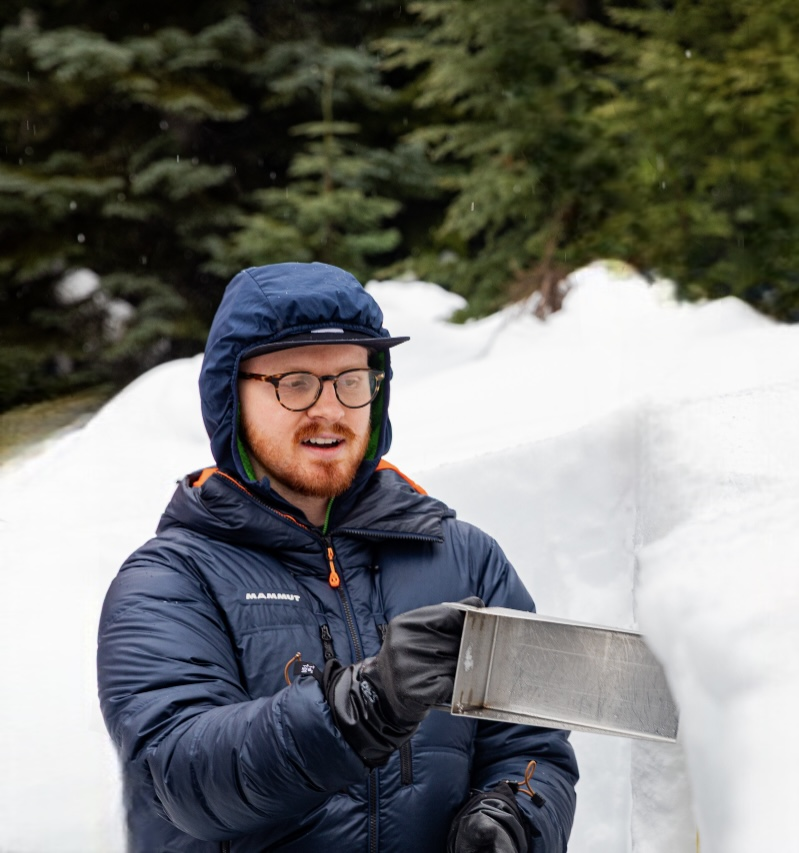

Cascade Mountain Weather is dedicated to providing accurate, up-to-date weather and snow forecasts for Washington's ski areas. Our passion for skiing and meteorology drives us to help you make the most of every powder day.
Meet the Team

Clinton Alden
Forecaster & Founder
Clinton is a PhD Student in the Mountain Hydrology Research Group at the University of Washington. His current research interests include cloud-snow interactions in mountainous regions and investigating snowpack changes with warming temperatures.

Danny Hogan
Forecaster & Founder
Danny is a PhD Candidate in the Mountain Hydrology Research Group at the University of Washington. His current research interests focus on the interactions between the atmosphere and land surface in mountainous regions, with an emphasis on snowpack dynamics and hydrological processes.